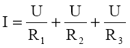
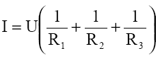
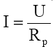
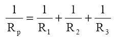

Gruparea rezistoarelor in paralel
Două sau mai multe rezistoare sunt grupate în paralel dacă sunt
conectate între aceleaşi două noduri.

Rezistoarele grupate în paralel au aceeaşi tensiune la borne.
Conform legii I a lui Kirchhoff
I=I1+I2+I3

sau

si
Pentru circuitul echivalent

De unde rezultă:

Rezistenţa echivalentă Rp este întotdeauna mai mică decât oricare
din rezistanţele Rk. Pentru cazul în care sunt conectate doar două rezistoare
în paralel este comod de calculat rezistenţa echivalentă
folosind relaţia:
Rp=R1*R2/(R1+R2)